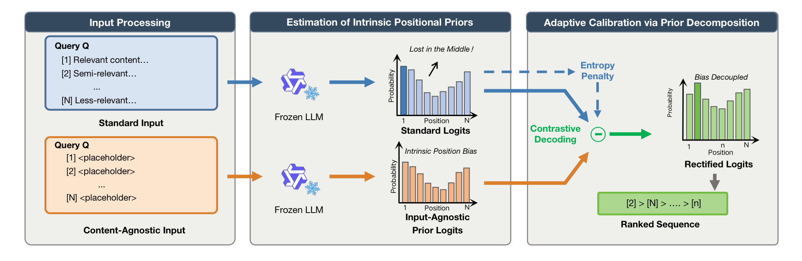
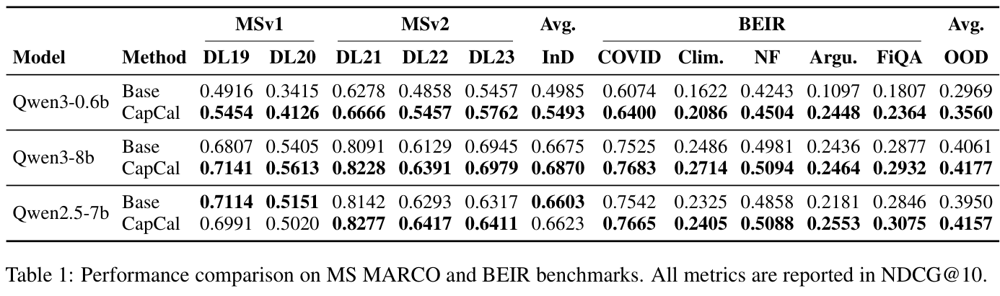

Official code for "Learning from Emptiness: De-biasing Listwise Rerankers with Content-Agnostic Probability Calibration".
The paper studies a core failure mode of listwise LLM rerankers: even when the candidate set is semantically identical, the model may still prefer some list positions over others. Our method, CapCal, treats this behavior as an explicit prior, estimates it from content-agnostic inputs, and subtracts it during decoding. The public release of this repository keeps the code needed to reproduce the paper's results.
1. Paper
Hang Lv, Hongchao Gu, Ruiqing Yang, Liangyue Li, Zulong Chen, Defu Lian, Hao Wang, and Enhong Chen. Learning from Emptiness: De-biasing Listwise Rerankers with Content-Agnostic Probability Calibration. ACL 2026, 2026.
Paper / PDF / Project Page / Code / Citation
CapCal is a training-free calibration method for listwise LLM rerankers. It estimates the reranker's content-agnostic positional prior using placeholder passages, then calibrates output probabilities so ranking decisions rely less on structural position bias.
2. Highlights
- Estimates listwise reranker position bias with content-agnostic inputs.
- Calibrates ranking probabilities during decoding without model retraining.
- Supports both fixed and adaptive calibration strategies.
- Includes public scripts for Qwen reranking experiments and BM25 baselines.
3. Method At A Glance

CapCal is a training-free calibration framework for listwise reranking.
Given a query and a list of candidate passages, we run the frozen reranker twice:
- Standard input: the original query and candidate passages.
- Content-agnostic input: the same query and the same passage identifiers, but every passage body is replaced with a placeholder.
The second pass exposes the model's input-agnostic positional prior. Intuitively, if the model still prefers some document indices when the content is empty, that preference is structural bias rather than semantic relevance.
CapCal then calibrates the ranking score by subtracting the excessive prior component from the standard probability:
S(d_i) = P(d_i | x) - α · (P(d_i | x_empty) - 1 / |C_k|)where:
P(d_i | x)is the identifier-level probability under the original prompt,P(d_i | x_empty)is the identifier-level probability under the placeholder prompt,|C_k|is the number of remaining candidates at decoding stepk,αis the calibration strength.
This repository includes the two variants reported in the main paper:
- Fixed calibration: uses a constant
α. - Adaptive calibration: adjusts
αfrom model uncertainty, using the entropy of the current candidate distribution.
To make decoding valid for listwise ranking, the implementation also uses constrained decoding, so the model always produces a legal permutation of document identifiers.
4. Repository Structure and Implementation
The release is intentionally narrow: it focuses on the paper's main experimental surface rather than every exploratory branch developed during the project.
.
├── code/
│ ├── dataloader/ # TREC-COVID and TREC-DL loaders
│ ├── main/ # main experiment entry points and BM25 baseline
│ ├── scripts/ # public Qwen experiment wrappers
│ └── src/ # CapCal decoding, calibration, metrics, utilities
├── docs/
│ ├── assets/ # figures used in the documentation
│ └── REPRODUCTION.md # compact reproduction guide
├── data/ # expected data root (not versioned)
├── results/ # generated outputs
└── requirements.txtThe most important files are:
code/src/llm_utils.py: the retained CapCal implementations.LLMExp_FixedBiasLLMExp_AdaptiveBias
code/main/main.py: the main runner for reranking experiments.code/main/calculate_bm25_baseline.py: BM25 baseline computation.code/scripts/run_qwen_suite.sh: shared shell runner used by all public model wrappers.code/scripts/qwen*_fixed.shandcode/scripts/qwen*_adaptive.sh: ready-to-run scripts for the Qwen models used in the paper.
The public experiment surface now includes only:
- Models: Qwen2.5-7B-Instruct, Qwen3-0.6B, Qwen3-1.7B, Qwen3-4B, Qwen3-8B
- Datasets: TREC-COVID, TREC DL 2019, TREC DL 2020, TREC DL 2021, TREC DL 2022, TREC DL 2023
- Methods: fixed calibration, adaptive calibration, BM25 baseline
5. Installation
We recommend Python 3.10.
conda create -n rerank-bias python=3.10 -y
conda activate rerank-bias
pip install -r requirements.txtrequirements.txt is intentionally minimal and contains only the core runtime packages needed for the public release:
torchtransformersnumpyPyYAMLtqdmbeirrank-bm25ir-measures
If you want a compact step-by-step runbook, see docs/REPRODUCTION.md.
6. Data Layout
All loaders resolve datasets relative to RERANK_BIAS_DATA_ROOT. If the variable is unset, the repository defaults to ./data.
export RERANK_BIAS_DATA_ROOT=/path/to/your/data
export RERANK_BIAS_HF_HOME=$RERANK_BIAS_DATA_ROOT/huggingfaceExpected layout:
$RERANK_BIAS_DATA_ROOT/
├── beir/
│ └── trec-covid/
├── trec-dl-2019/
├── trec-dl-2020/
├── trec/
│ ├── trec21/
│ ├── trec22/
│ └── trec23/
└── msmarco_v2_passage/TREC-COVID
You can download the BEIR-formatted trec-covid data with:
python code/dataloader/download_datasets.py --datasets trec-covidTREC-DL
TREC DL data is expected locally:
dl19→$RERANK_BIAS_DATA_ROOT/trec-dl-2019dl20→$RERANK_BIAS_DATA_ROOT/trec-dl-2020dl21→$RERANK_BIAS_DATA_ROOT/trec/trec21dl22→$RERANK_BIAS_DATA_ROOT/trec/trec22dl23→$RERANK_BIAS_DATA_ROOT/trec/trec23
For dl21, dl22, and dl23, the loader also needs the MSMARCO v2 passage collection:
export RERANK_MSMARCO_V2_PASSAGE_DIR=/path/to/msmarco_v2_passageIf this variable is unset, the loader will look for msmarco_v2_passage under RERANK_BIAS_DATA_ROOT.
7. Running the Released Experiments
1. Verify the environment and dataset path
python code/main/main.py \
--dataset_type beir \
--dataset_name trec-covid \
--num_queries 10 \
--dry_run2. Run fixed calibration
bash code/scripts/qwen3_1_7b_fixed.sh3. Run adaptive calibration
bash code/scripts/qwen3_1_7b_adaptive.sh4. Override datasets or calibration strengths
NUM_QUERIES=100 \
BIAS_RATES="1.0 1.5 2.0" \
TREC_DL_DATASETS="dl21 dl22 dl23" \
BEIR_DATASETS="trec-covid" \
bash code/scripts/qwen3_4b_fixed.sh5. Compute BM25 baselines
bash code/scripts/calculate_bm25_baseline_all.sh8. Outputs
By default:
- Qwen experiment outputs are written under
results/qwen/ - BM25 outputs are written under
results/bm25_baseline/
9. Configuration Notes
BIAS_RATEScontrols the position-bias strength sweep used by the released scripts.TREC_DL_DATASETSandBEIR_DATASETScan be overridden from the shell without editing scripts.RERANK_BIAS_DATA_ROOTandRERANK_MSMARCO_V2_PASSAGE_DIRshould point to local benchmark data roots before running full experiments.
10. Experimental Highlights

The paper's main result table is included here to show the reported NDCG@10 gains across MS MARCO and BEIR benchmarks before the distilled evidence summary.
The paper evaluates CapCal on 10 ranking benchmarks from MS MARCO, TREC-DL, and BEIR with Qwen models from 0.6B to 8B.
| Setting | Reported result | Takeaway |
|---|---|---|
| Lightweight reranker | In high-bias scenarios, CapCal improves small models by more than 10 NDCG points. | Position calibration can unlock useful ranking quality from 0.6B-scale rerankers. |
| Qwen3-0.6B fixed comparison | DL19 improves from 0.4916 to 0.5454, DL20 from 0.3415 to 0.4126, DL22 from 0.4858 to 0.5457, and FiQA from 0.1807 to 0.2364. | The gains appear across both TREC-DL and BEIR-style settings. |
| Training-free baseline comparison | On Qwen3-0.6B, CapCal matches or beats permutation self-consistency while using one additional forward pass instead of 10 full reranking calls. | CapCal preserves single-pass-style efficiency better than permutation aggregation. |
| Larger reranker | On Qwen3-8B, CapCal is better than PSC on DL20, DL22, DL23, Climate-FEVER, NFCorpus, and FiQA. | The calibration remains useful beyond very small models. |
Conclusion: CapCal targets a concrete deployment tradeoff: reduce listwise position bias without retraining and without paying the latency cost of repeated prompt permutations.
11. Notes For Maintainers
- Keep generated outputs under
results/and out of Git history unless they are curated release artifacts. - Store new README/project-page figures under
docs/assets/. - Add ACL Anthology, slides, poster, or video links when official presentation materials become public.
12. Citation
If you use this repository, please cite:
@misc{lv2026capcal,
title={Learning from Emptiness: De-biasing Listwise Rerankers with Content-Agnostic Probability Calibration},
author={Hang Lv and Hongchao Gu and Ruiqing Yang and Liangyue Li and Zulong Chen and Defu Lian and Hao Wang and Enhong Chen},
year={2026},
eprint={2604.10150},
archivePrefix={arXiv},
primaryClass={cs.AI},
url={https://arxiv.org/abs/2604.10150},
}13. Contact
For paper questions, please contact:
- Co-first authors: Hang Lv (
lvhang1001@mail.ustc.edu.cn) and Hongchao Gu (hcgu@mail.ustc.edu.cn). - Corresponding author: Hao Wang (
wanghao3@ustc.edu.cn)
For repository issues, please open a GitHub issue in this repository.